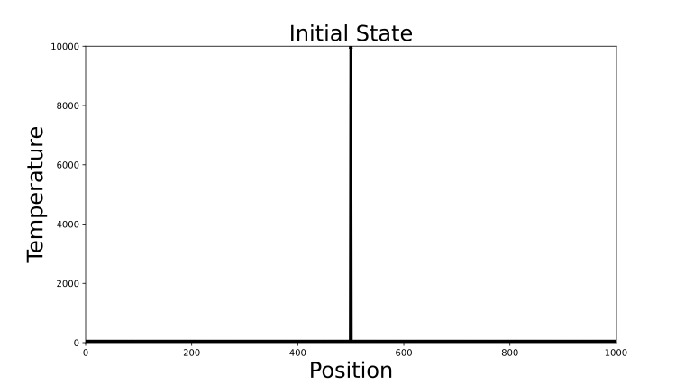
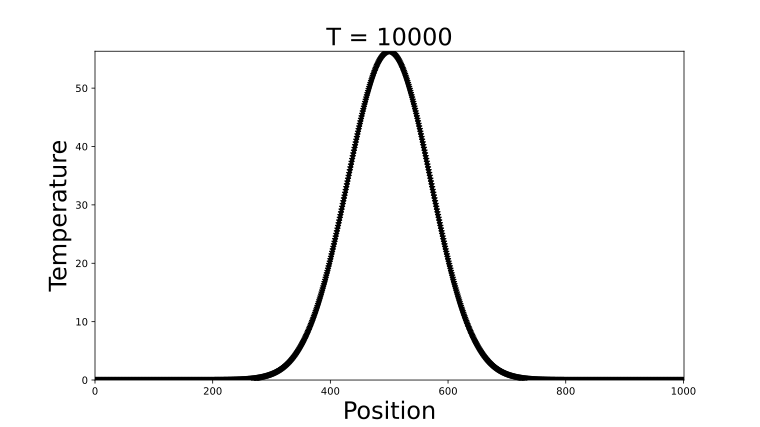

Examples#
Vector Addition#
This example uses Numba CUDA MLIR to create on-device arrays and a vector addition kernel; it is a warmup for learning how to write GPU kernels using Numba. We’ll begin with some required imports:
test_ex_vecadd in tests/doc_examples/test_vecadd.py#1import numpy as np
2from numba import cuda
The following function is the kernel. Note that it is defined in terms of Python variables with unspecified types. When the kernel is launched, Numba CUDA MLIR will examine the types of the arguments that are passed at runtime and generate a CUDA kernel specialized for them.
Note that kernels do not return values and must write any output into arrays
passed in as parameters (this is similar to the requirement that CUDA C++
kernels have void return type). Here we pass in c for the results to be
written into.
test_ex_vecadd in tests/doc_examples/test_vecadd.py#1@cuda.jit
2def f(a, b, c):
3 # like threadIdx.x + (blockIdx.x * blockDim.x)
4 tid = cuda.grid(1)
5 size = len(c)
6
7 if tid < size:
8 c[tid] = a[tid] + b[tid]
9
cuda.to_device() can be used create
device-side copies of arrays. cuda.device_array_like() creates an uninitialized array of the
same shape and type as an existing array. Here we transfer two vectors and
create an empty vector to hold our results:
test_ex_vecadd in tests/doc_examples/test_vecadd.py#1N = 100000
2a = cuda.to_device(np.random.random(N))
3b = cuda.to_device(np.random.random(N))
4c = cuda.device_array_like(a)
A call to forall() generates
an appropriate launch configuration with a 1D grid (see
Kernel invocation) for a given data size and is often the simplest
way of launching a kernel:
test_ex_vecadd in tests/doc_examples/test_vecadd.py#1f.forall(len(a))(a, b, c)
2print(c.copy_to_host())
This prints:
[0.73548323 1.32061059 0.12582968 ... 1.25925809 1.49335059 1.59315414]
One can also configure the grid manually using the subscripting syntax. The following example launches a grid with sufficient threads to operate on every vector element:
test_ex_vecadd in tests/doc_examples/test_vecadd.py#1# Enough threads per block for several warps per block
2nthreads = 256
3# Enough blocks to cover the entire vector depending on its length
4nblocks = (len(a) // nthreads) + 1
5f[nblocks, nthreads](a, b, c)
6print(c.copy_to_host())
This also prints:
[0.73548323 1.32061059 0.12582968 ... 1.25925809 1.49335059 1.59315414]
1D Heat Equation#
This example solves Laplace’s equation in one dimension for a certain set of initial conditions and boundary conditions. A full discussion of Laplace’s equation is out of scope for this documentation, but it will suffice to say that it describes how heat propagates through an object over time. It works by discretizing the problem in two ways:
The domain is partitioned into a mesh of points that each have an individual temperature.
Time is partitioned into discrete intervals that are advanced forward sequentially.
Then, the following assumption is applied: The temperature of a point after some interval has passed is some weighted average of the temperature of the points that are directly adjacent to it. Intuitively, if all the points in the domain are very hot and a single point in the middle is very cold, as time passes, the hot points will cause the cold one to heat up and the cold point will cause the surrounding hot pieces to cool slightly. Simply put, the heat spreads throughout the object.
We can implement this simulation using a kernel. Let’s start simple by assuming we have a one dimensional object which we’ll represent with an array of values. The position of the element in the array is the position of a point within the object, and the value of the element represents the temperature.
test_ex_laplace in tests/doc_examples/test_laplace.py#1import numpy as np
2from numba import cuda
Some initial setup here. Let’s make one point in the center of the object very hot.
test_ex_laplace in tests/doc_examples/test_laplace.py# 1# Use an odd problem size.
2# This is so there can be an element truly in the "middle" for symmetry.
3size = 1001
4data = np.zeros(size)
5
6# Middle element is made very hot
7data[500] = 10000
8buf_0 = cuda.to_device(data)
9
10# This extra array is used for synchronization purposes
11buf_1 = cuda.device_array_like(buf_0)
12
13niter = 10000
The initial state of the problem can be visualized as:

In our kernel each thread will be responsible for managing the temperature update for a single element
in a loop over the desired number of timesteps. The kernel is below. Note the use of cooperative group
synchronization and the use of two buffers swapped at each iteration to avoid race conditions. See
cuda.cg.this_grid() for details.
test_ex_laplace in tests/doc_examples/test_laplace.py# 1@cuda.jit
2def solve_heat_equation(buf_0, buf_1, timesteps, k):
3 i = cuda.grid(1)
4
5 # Don't continue if our index is outside the domain
6 if i >= len(buf_0):
7 return
8
9 # Prepare to do a grid-wide synchronization later
10 grid = cuda.cg.this_grid()
11
12 for step in range(timesteps):
13 # Select the buffer from the previous timestep
14 if (step % 2) == 0:
15 data = buf_0
16 next_data = buf_1
17 else:
18 data = buf_1
19 next_data = buf_0
20
21 # Get the current temperature associated with this point
22 curr_temp = data[i]
23
24 # Apply formula from finite difference equation
25 if i == 0:
26 # Left wall is held at T = 0
27 next_temp = curr_temp + k * (data[i + 1] - (2 * curr_temp))
28 elif i == len(data) - 1:
29 # Right wall is held at T = 0
30 next_temp = curr_temp + k * (data[i - 1] - (2 * curr_temp))
31 else:
32 # Interior points are a weighted average of their neighbors
33 next_temp = curr_temp + k * (data[i - 1] - (2 * curr_temp) + data[i + 1])
34
35 # Write new value to the next buffer
36 next_data[i] = next_temp
37
38 # Wait for every thread to write before moving on
39 grid.sync()
40
Calling the kernel:
test_ex_laplace in tests/doc_examples/test_laplace.py#1solve_heat_equation.forall(len(data))(buf_0, buf_1, niter, 0.25)
Plotting the final data shows an arc that is highest where the object was hot initially and gradually sloping down to zero towards the edges where the temperature is fixed at zero. In the limit of infinite time, the arc will flatten out completely.

Dividing Click Data into Sessions#
A common problem in business analytics is that of grouping the activity of users of an online platform into sessions, called “sessionization”. The idea is that users generally traverse through a website and perform various actions (clicking something, filling out a form, etc.) in discrete groups. Perhaps a customer spends some time shopping for an item in the morning and then again at night - often the business is interested in treating these periods as separate interactions with their service, and this creates the problem of programmatically splitting up activity in some agreed-upon way.
Here we’ll illustrate how to write a kernel to solve this problem. We’ll start
with data containing two fields: let user_id represent a unique ID
corresponding to an individual customer, and let action_time be a time that
some unknown action was taken on the service. Right now, we’ll assume there’s
only one type of action, so all there is to know is when it happened.
Our goal will be to create a new column called session_id, which contains a label corresponding to a unique
session. We’ll define the boundary between sessions as when there has been at least one hour between clicks.
test_ex_sessionize in tests/doc_examples/test_sessionize.py#1import numpy as np
2from numba import cuda
3
4# Set the timeout to one hour
5session_timeout = np.int64(np.timedelta64("3600", "s"))
Here is a solution:
test_ex_sessionize in tests/doc_examples/test_sessionize.py# 1@cuda.jit
2def sessionize(user_id, timestamp, results):
3 gid = cuda.grid(1)
4 size = len(user_id)
5
6 if gid >= size:
7 return
8
9 # Determine session boundaries
10 is_first_datapoint = gid == 0
11 if not is_first_datapoint:
12 new_user = user_id[gid] != user_id[gid - 1]
13 timed_out = timestamp[gid] - timestamp[gid - 1] > session_timeout
14 is_sess_boundary = new_user or timed_out
15 else:
16 is_sess_boundary = True
17
18 # Determine session labels
19 if is_sess_boundary:
20 # This thread marks the start of a session
21 results[gid] = gid
22
23 # Make sure all session boundaries are written
24 # before populating the session id
25 grid = cuda.cg.this_grid()
26 grid.sync()
27
28 look_ahead = 1
29 # Check elements 'forward' of this one
30 # until a new session boundary is found
31 while results[gid + look_ahead] == 0:
32 results[gid + look_ahead] = gid
33 look_ahead += 1
34 # Avoid out-of-bounds accesses by the last thread
35 if gid + look_ahead == size - 1:
36 results[gid + look_ahead] = gid
37 break
38
Let’s generate some data and try out the kernel:
test_ex_sessionize in tests/doc_examples/test_sessionize.py# 1# Generate data
2ids = cuda.to_device(
3 np.array(
4 [
5 1,
6 1,
7 1,
8 1,
9 1,
10 1,
11 2,
12 2,
13 2,
14 3,
15 3,
16 3,
17 3,
18 3,
19 3,
20 3,
21 3,
22 3,
23 3,
24 4,
25 4,
26 4,
27 4,
28 4,
29 4,
30 4,
31 4,
32 4,
33 ]
34 )
35)
36sec = cuda.to_device(
37 np.array(
38 [
39 1,
40 2,
41 3,
42 5000,
43 5001,
44 5002,
45 1,
46 2,
47 3,
48 1,
49 2,
50 5000,
51 5001,
52 10000,
53 10001,
54 10002,
55 10003,
56 15000,
57 150001,
58 1,
59 5000,
60 50001,
61 15000,
62 20000,
63 25000,
64 25001,
65 25002,
66 25003,
67 ],
68 dtype="datetime64[ns]",
69 ).astype("int64") # Cast to int64 for compatibility
70)
71# Create a vector to hold the results
72results = cuda.to_device(np.zeros(len(ids)))
As can be seen above, the kernel successfully divided the first three datapoints from the second three for the first user ID, and a similar pattern is seen throughout.
JIT Function CPU-GPU Compatibility#
This example demonstrates how numba.jit can be used to jit compile a function for the CPU, while at the same time making
it available for use inside CUDA kernels. This can be very useful for users that are migrating workflows from CPU to GPU as
they can directly reuse potential business logic with fewer code changes.
Take the following example function:
test_ex_cpu_gpu_compat in tests/doc_examples/test_cpu_gpu_compat.py#1@numba.jit
2def business_logic(x, y, z):
3 return 4 * z * (2 * x - (4 * y) / 2 * pi)
4
The function business_logic can be run standalone in compiled form on the CPU:
test_ex_cpu_gpu_compat in tests/doc_examples/test_cpu_gpu_compat.py#1print(business_logic(1, 2, 3)) # -126.79644737231007
It can also be directly reused threadwise inside a GPU kernel. For example one may
generate some vectors to represent x, y, and z:
test_ex_cpu_gpu_compat in tests/doc_examples/test_cpu_gpu_compat.py#1X = cuda.to_device([1, 10, 234])
2Y = cuda.to_device([2, 2, 4014])
3Z = cuda.to_device([3, 14, 2211])
4results = cuda.to_device([0.0, 0.0, 0.0])
And a numba kernel referencing the decorated function:
test_ex_cpu_gpu_compat in tests/doc_examples/test_cpu_gpu_compat.py#1@cuda.jit
2def f(res, xarr, yarr, zarr):
3 tid = cuda.grid(1)
4 if tid < len(xarr):
5 # The function decorated with numba.jit may be directly reused
6 res[tid] = business_logic(xarr[tid], yarr[tid], zarr[tid])
7
This kernel can be invoked in the normal way:
test_ex_cpu_gpu_compat in tests/doc_examples/test_cpu_gpu_compat.py#1f.forall(len(X))(results, X, Y, Z)
2print(results)
3# [-126.79644737231007, 416.28324559588634, -218912930.2987788]
Monte Carlo Integration#
This example shows how to approximate the value of a definite integral by rapidly generating random numbers on the GPU. A detailed description of the mathematical mechanics of Monte Carlo integration is out of the scope of the example, but it can briefly be described as an averaging process where the area under the curve is approximated by taking the average of many rectangles formed by its function values.
In addition, this example shows how to perform reductions in numba using the
cuda.reduce() API.
test_ex_montecarlo in tests/doc_examples/test_montecarlo.py#1import numba
2import numpy as np
3from numba import cuda
4from numba.cuda.random import (
5 create_xoroshiro128p_states,
6 xoroshiro128p_uniform_float32,
7)
Let’s create a variable to control the number of samples drawn:
test_ex_montecarlo in tests/doc_examples/test_montecarlo.py#1# number of samples, higher will lead to a more accurate answer
2nsamps = 1000000
The following kernel implements the main integration routine:
test_ex_montecarlo in tests/doc_examples/test_montecarlo.py# 1@cuda.jit
2def mc_integrator_kernel(out, rng_states, lower_lim, upper_lim):
3 """
4 kernel to draw random samples and evaluate the function to
5 be integrated at those sample values
6 """
7 size = len(out)
8
9 gid = cuda.grid(1)
10 if gid < size:
11 # draw a sample between 0 and 1 on this thread
12 samp = xoroshiro128p_uniform_float32(rng_states, gid)
13
14 # normalize this sample to the limit range
15 samp = samp * (upper_lim - lower_lim) + lower_lim
16
17 # evaluate the function to be
18 # integrated at the normalized
19 # value of the sample
20 y = func(samp)
21 out[gid] = y
22
This convenience function calls the kernel performs some preprocessing and post processing steps. Note the use of the reduction API to take sum of the array and compute the final result:
test_ex_montecarlo in tests/doc_examples/test_montecarlo.py# 1@cuda.reduce
2def sum_reduce(a, b):
3 return a + b
4
5def mc_integrate(lower_lim, upper_lim, nsamps):
6 """
7 approximate the definite integral of `func` from
8 `lower_lim` to `upper_lim`
9 """
10 out = cuda.to_device(np.zeros(nsamps, dtype="float32"))
11 rng_states = create_xoroshiro128p_states(nsamps, seed=42)
12
13 # jit the function for use in CUDA kernels
14
15 mc_integrator_kernel.forall(nsamps)(out, rng_states, lower_lim, upper_lim)
16 # normalization factor to convert
17 # to the average: (b - a)/(N - 1)
18 factor = (upper_lim - lower_lim) / (nsamps - 1)
19
20 return sum_reduce(out) * factor
21
We can now use mc_integrate to compute the definite integral of this function between
two limits:
test_ex_montecarlo in tests/doc_examples/test_montecarlo.py#1# define a function to integrate
2@numba.jit
3def func(x):
4 return 1.0 / x
5
6mc_integrate(1, 2, nsamps) # array(0.6929643, dtype=float32)
7mc_integrate(2, 3, nsamps) # array(0.4054021, dtype=float32)
Matrix multiplication#
First, import the modules needed for this example:
test_ex_matmul in tests/doc_examples/test_matmul.py#1from numba import cuda
2from numba.cuda import float32
3import numpy as np
4import math
Here is a naïve implementation of matrix multiplication using a CUDA kernel:
test_ex_matmul in tests/doc_examples/test_matmul.py# 1@cuda.jit
2def matmul(A, B, C):
3 """Perform square matrix multiplication of C = A * B."""
4 i, j = cuda.grid(2)
5 if i < C.shape[0] and j < C.shape[1]:
6 tmp = 0.0
7 for k in range(A.shape[1]):
8 tmp += A[i, k] * B[k, j]
9 C[i, j] = tmp
10
An example usage of this function is as follows:
test_ex_matmul in tests/doc_examples/test_matmul.py# 1x_h = np.arange(16).reshape([4, 4])
2y_h = np.ones([4, 4])
3z_h = np.zeros([4, 4])
4
5x_d = cuda.to_device(x_h)
6y_d = cuda.to_device(y_h)
7z_d = cuda.to_device(z_h)
8
9threadsperblock = (16, 16)
10blockspergrid_x = math.ceil(z_h.shape[0] / threadsperblock[0])
11blockspergrid_y = math.ceil(z_h.shape[1] / threadsperblock[1])
12blockspergrid = (blockspergrid_x, blockspergrid_y)
13
14matmul[blockspergrid, threadsperblock](x_d, y_d, z_d)
15z_h = z_d.copy_to_host()
16print(z_h)
17print(x_h @ y_h)
This implementation is straightforward and intuitive but performs poorly, because the same matrix elements will be loaded multiple times from device memory, which is slow (some devices may have transparent data caches, but they may not be large enough to hold the entire inputs at once).
It will be faster if we use a blocked algorithm to reduce accesses to the device memory. CUDA provides a fast shared memory for threads in a block to cooperatively compute on a task. The following implements a faster version of the square matrix multiplication using shared memory:
test_ex_matmul in tests/doc_examples/test_matmul.py# 1# Controls threads per block and shared memory usage.
2# The computation will be done on blocks of TPBxTPB elements.
3# TPB should not be larger than 32 in this example
4TPB = 16
5
6@cuda.jit
7def fast_matmul(A, B, C):
8 """
9 Perform matrix multiplication of C = A * B using CUDA shared memory.
10
11 Reference: https://stackoverflow.com/a/64198479/13697228 by @RobertCrovella
12 """
13 # Define an array in the shared memory
14 # The size and type of the arrays must be known at compile time
15 sA = cuda.shared.array(shape=(TPB, TPB), dtype=float32)
16 sB = cuda.shared.array(shape=(TPB, TPB), dtype=float32)
17
18 x, y = cuda.grid(2)
19
20 tx = cuda.threadIdx.x
21 ty = cuda.threadIdx.y
22 bpg = cuda.gridDim.x # blocks per grid
23
24 # Each thread computes one element in the result matrix.
25 # The dot product is chunked into dot products of TPB-long vectors.
26 tmp = float32(0.0)
27 for i in range(bpg):
28 # Preload data into shared memory
29 sA[ty, tx] = 0
30 sB[ty, tx] = 0
31 if y < A.shape[0] and (tx + i * TPB) < A.shape[1]:
32 sA[ty, tx] = A[y, tx + i * TPB]
33 if x < B.shape[1] and (ty + i * TPB) < B.shape[0]:
34 sB[ty, tx] = B[ty + i * TPB, x]
35
36 # Wait until all threads finish preloading
37 cuda.syncthreads()
38
39 # Computes partial product on the shared memory
40 for j in range(TPB):
41 tmp += sA[ty, j] * sB[j, tx]
42
43 # Wait until all threads finish computing
44 cuda.syncthreads()
45 if y < C.shape[0] and x < C.shape[1]:
46 C[y, x] = tmp
47
Because the shared memory is a limited resource, the code preloads a small
block at a time from the input arrays. Then, it calls
syncthreads() to wait until all threads have
finished preloading and before doing the computation on the shared memory. It
synchronizes again after the computation to ensure all threads have finished
with the data in shared memory before overwriting it in the next loop
iteration.
An example usage of the fast_matmul function is as follows:
test_ex_matmul in tests/doc_examples/test_matmul.py# 1x_h = np.arange(16).reshape([4, 4])
2y_h = np.ones([4, 4])
3z_h = np.zeros([4, 4])
4
5x_d = cuda.to_device(x_h)
6y_d = cuda.to_device(y_h)
7z_d = cuda.to_device(z_h)
8
9threadsperblock = (TPB, TPB)
10blockspergrid_x = math.ceil(z_h.shape[0] / threadsperblock[0])
11blockspergrid_y = math.ceil(z_h.shape[1] / threadsperblock[1])
12blockspergrid = (blockspergrid_x, blockspergrid_y)
13
14fast_matmul[blockspergrid, threadsperblock](x_d, y_d, z_d)
15z_h = z_d.copy_to_host()
16print(z_h)
17print(x_h @ y_h)
This passes a CUDA memory check test, which can help with debugging. Running the code above produces the following output:
$ python fast_matmul.py
[[ 6. 6. 6. 6.]
[22. 22. 22. 22.]
[38. 38. 38. 38.]
[54. 54. 54. 54.]]
[[ 6. 6. 6. 6.]
[22. 22. 22. 22.]
[38. 38. 38. 38.]
[54. 54. 54. 54.]]
Note
For high performance matrix multiplication in CUDA, see also the CuPy implementation.
The approach outlined here generalizes to non-square matrix multiplication as
follows by adjusting the blockspergrid variable:
Again, here is an example usage:
test_ex_matmul in tests/doc_examples/test_matmul.py# 1x_h = np.arange(115).reshape([5, 23])
2y_h = np.ones([23, 7])
3z_h = np.zeros([5, 7])
4
5x_d = cuda.to_device(x_h)
6y_d = cuda.to_device(y_h)
7z_d = cuda.to_device(z_h)
8
9threadsperblock = (TPB, TPB)
10grid_y_max = max(x_h.shape[0], y_h.shape[0])
11grid_x_max = max(x_h.shape[1], y_h.shape[1])
12blockspergrid_x = math.ceil(grid_x_max / threadsperblock[0])
13blockspergrid_y = math.ceil(grid_y_max / threadsperblock[1])
14blockspergrid = (blockspergrid_x, blockspergrid_y)
15
16fast_matmul[blockspergrid, threadsperblock](x_d, y_d, z_d)
17z_h = z_d.copy_to_host()
18print(z_h)
19print(x_h @ y_h)
and the corresponding output:
$ python nonsquare_matmul.py
[[ 253. 253. 253. 253. 253. 253. 253.]
[ 782. 782. 782. 782. 782. 782. 782.]
[1311. 1311. 1311. 1311. 1311. 1311. 1311.]
[1840. 1840. 1840. 1840. 1840. 1840. 1840.]
[2369. 2369. 2369. 2369. 2369. 2369. 2369.]]
[[ 253. 253. 253. 253. 253. 253. 253.]
[ 782. 782. 782. 782. 782. 782. 782.]
[1311. 1311. 1311. 1311. 1311. 1311. 1311.]
[1840. 1840. 1840. 1840. 1840. 1840. 1840.]
[2369. 2369. 2369. 2369. 2369. 2369. 2369.]]
Calling a NumPy UFunc#
UFuncs supported in Numba CUDA MLIR (see NumPy support) can be
called inside kernels, but the output array must be passed in as a positional
argument. The following example demonstrates a call to np.sin() inside a
kernel following this pattern:
test_ex_cuda_ufunc_call in tests/doc_examples/test_ufunc.py# 1import numpy as np
2from numba import cuda
3
4# A kernel calling a ufunc (sin, in this case)
5@cuda.jit
6def f(r, x):
7 # Compute sin(x) with result written to r
8 np.sin(x, r)
9
10# Declare input and output arrays
11x = np.arange(10, dtype=np.float32) - 5
12r = np.zeros_like(x)
13
14# Launch kernel that calls the ufunc
15f[1, 1](r, x)
16
17# A quick sanity check demonstrating equality of the sine computed by
18# the sin ufunc inside the kernel, and NumPy's sin ufunc
19np.testing.assert_allclose(r, np.sin(x))
Passing a pointer to a kernel#
Instead of using arrays, it can be useful for a kernel to accept a pointer argument - for example, when data is provided by another (potentially non-Python) library.
Using pointers requires them to be explicitly specified in the signature. We
can create them with types.CPointer:
test_ex_cpointer in tests/doc_examples/test_cpointer.py#1import numpy as np
2from numba import cuda
3from numba.cuda import types
4
5# The first kernel argument is a pointer to a uint8 array.
6# The second argument holds the length as a uint32.
7# The return type of a kernel is always void.
8sig = types.void(types.CPointer(types.uint8), types.uint32)
Next, we provide the signature to the @jit decorator when defining the
kernel. Note that unlike with arrays, Numba CUDA MLIR does not implicitly know
anything about the shape of the array. We need to pass the length into the
kernel, instead of being able to use len(x) or x.shape as we would with
an array.
test_ex_cpointer in tests/doc_examples/test_cpointer.py#1@cuda.jit(sig)
2def add_one(x, n):
3 i = cuda.grid(1)
4 if i < n:
5 x[i] += 1
6
To set up an example using the kernel and passing a pointer as an integer, we
create a device array in the usual way, then use the CUDA Array Interface to obtain the pointer for the purpose of this example.
However, the pointer could have been provided from anywhere - for example, from
another library that doesn’t support the CUDA Array Interface, or from
cudaMalloc in a C / C++ program, etc..
test_ex_cpointer in tests/doc_examples/test_cpointer.py# 1x = cuda.to_device(np.arange(10, dtype=np.uint8))
2
3# Print initial values of x
4print(x.copy_to_host()) # [0 1 2 3 4 5 6 7 8 9]
5
6# Obtain a pointer to the data from from the CUDA Array Interface
7x_ptr = x.__cuda_array_interface__["data"][0]
8x_len = len(x)
9
10# Launch the kernel with the pointer and length
11add_one[1, 32](x_ptr, x_len)
12
13# Demonstrate that the data was updated by the kernel
14print(x.copy_to_host()) # [ 1 2 3 4 5 6 7 8 9 10]